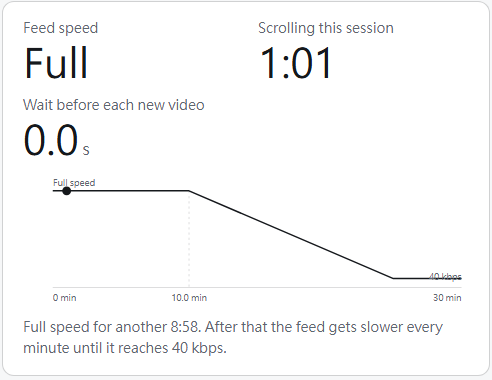
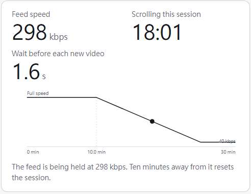
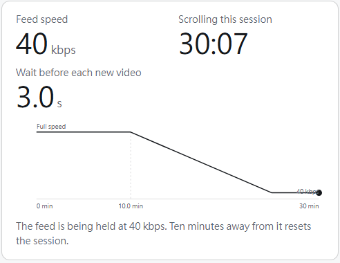

You made it to the end.
That is what Doomscroll Rehab does. It never blocks you or locks you out. It just makes short videos slower and blurrier the longer you scroll, until putting the phone down is easier than waiting for the next one.
I want this on my phoneWhat just happened
- Nobody stopped youNo lock, no countdown, no "time is up". You can scroll as long as you like.
- It just got worseEvery minute, videos load a bit slower and look a bit blurrier. Waiting becomes more boring than the video.
- You put it down yourselfLeave for ten minutes and it is all back to normal. Messages, maps and other apps were never touched.
Why not just block the apps?
Because you know how to turn a blocker off. The limit comes up and you tap "15 more minutes". You delete the app and reinstall it a few days later. Being stopped feels like being told off, so the blocker is what gets switched off.
Slowing is different. There is nothing to argue with; the videos just stop being worth the wait. And it only tightens a little each day: ten minutes of normal speed on day one, about four by day fourteen.
When you really do have a reason, tell the AI inside what you want to do and when you will stop, and it gives you a few minutes back. It never lectures. Afterwards it shows you what you said next to what you did, with no score.
What the real thing looks like



Does this actually work?
Nobody has studied slowing the connection itself yet; that is what we are trying. But this is what the closest research says:
- 36%of the time, people gave up opening an app when they had to wait a moment first. After six weeks they tried 37% less often. The wait worked. The pep talk did not.Grüning, Riedel, Lorenz-Spreen. PNAS, 2023.
- 45 minless phone time per day, four months later, for people who cut back an hour a day. People who quit for a whole week: 38 minutes. Cutting back lasted at least as well as quitting.Brailovskaia et al. Journal of Experimental Psychology: Applied, 2022. N=619.
- 31%of social media use is attributed to self-control problems.Allcott, Gentzkow, Song. American Economic Review, 2022.
- 0.2–0.6%fewer searches per person when Google delayed results by 0.1 to 0.4 seconds. Platforms have always known slower means less use. We just hand that switch to you.Brutlag. Google, 2009.
Want this on your own phone?
It is on Android for now, free and open source. It is not in an app store yet; setup steps are on GitHub. So far it has only been tested with Instagram, and there is no iPhone version.
Get the app on GitHub